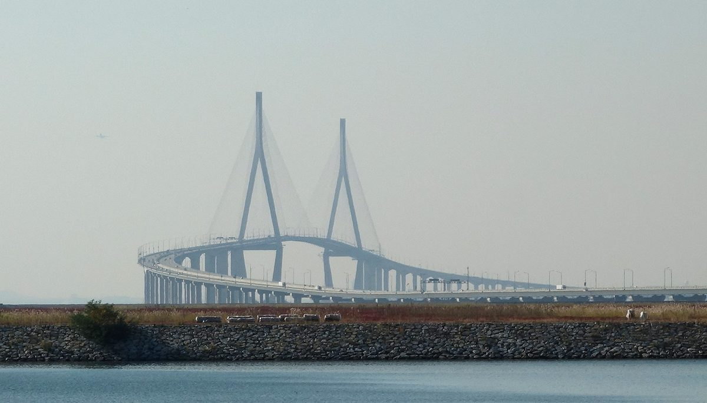

인천 앞바다 해상풍력 7GW 앞두고 연구진 미래전략안 발표…어업인 상생·지역 전력 지산지소·섬과 원도심 편익 공유 등 22개 과제

인천TP 시민포럼서 임효숙 동국대 교수 3대 분야·9대 중점전략 제시…인천시 확정 정책 아닌 연구진 안, 11월 의견수렴 거쳐 12월 중순 최종안
인천 앞바다에서 공공주도 2GW, 민간주도 5GW 등 모두 7GW 규모의 해상풍력 사업이 서로 다른 단계로 추진되는 가운데, 이를 지역 현안과 묶어 보자는 '인천 해상풍력 미래전략안'이 30일 연구진 안으로 처음 공개됐다. 임효숙 동국대 WISE캠퍼스 교수는 이날 인천테크노파크가 미추홀타워에서 연 인천 해상풍력 시민포럼에서 3대 분야, 9대 중점전략, 22개 정책과제로 짠 전략안을 내놨다. 첫 분야는 종합계획과 통합정보 플랫폼, 인천시 주관 통합협의체, 거점항만·공급망 집적단지 같은 예측 가능한 추진 기반을, 둘째 분야는 어업인 소통창구 일원화와 폐어구 수매, 인천 해역 전력을 지역 기업이 쓰는 지산지소, 섬 교통·에너지 공급 개선, 항구·원도심 주민의 편익 공유, 재원 확보와 투명한 관리 등 지역 상생을 담았다. 셋째 분야로는 인천시 주도 사회적 대화체계와 갈등 조정, 해양생태 감시, 접경해역 어선 안전관리를 꼽았고, 민관협의회 밖의 일반 주민도 의견을 낼 수 있도록 주민소통관과 공론화를 운영하자고 했다. 임 교수는 사업자와 주민이 같은 정보를 놓고 소통할 체계가 필요하다고 강조하면서도, 전략안은 모든 과제를 한꺼번에 추진하자는 것이 아니라 아이디어를 폭넓게 제시한 것이라고 설명했다. 연구진은 11월 분야별 전문가 의견 수렴과 추가 포럼을 거쳐 12월 중순 최종안을 낼 계획이다.
시민에너지 관점
7GW 가운데 5GW가 민간 사업인데, 22개 과제 어디에도 주민이 발전소 지분을 갖는 길은 아직 따로 이름을 얻지 못했다. 편익 공유가 지원사업이나 기금 배분에 머물면 사업자가 정한 몫을 받는 데서 끝나고, 어업인과 섬 주민의 반발도 사업마다 보상 협상으로 되풀이되기 쉽다. '재원 확보와 투명한 관리' 전략 안에 주민과 시민이 출자해 배당을 받는 구조를 넣어야 편익이 시혜가 아닌 권리가 되고, 사회적 대화도 주인으로서의 대화가 된다. 연구진과 인천시는 12월 최종안에 공공주도 2GW부터 주민 지분 참여의 방식과 목표를 과제로 담아야 한다.
출처: 인천투데이 2026-10-30 박규호 원문 보기
仁川沖の洋上風力7GWを前に研究陣が未来戦略案を発表…漁業者との共生・地域電力の地産地消・島と旧市街地の便益共有など22の課題
仁川テクノパークの市民フォーラムで東国大のイム・ヒョスク教授が3分野・9重点戦略を提示…仁川市の確定政策ではなく研究陣の案、11月の意見集約を経て12月中旬に最終案
仁川沖で公共主導2GW、民間主導5GWの計7GW規模の洋上風力事業がそれぞれ異なる段階で進むなか、これを地域の課題と結びつけようという「仁川洋上風力未来戦略案」が30日、研究陣の案として初めて公開された。東国大学WISEキャンパスのイム・ヒョスク教授は同日、仁川テクノパークが弥鄒忽タワーで開いた仁川洋上風力市民フォーラムで、3分野・9重点戦略・22政策課題で構成した戦略案を示した。第1分野は総合計画や統合情報プラットフォーム、仁川市主管の統合協議体、拠点港湾・サプライチェーン集積団地など予測可能な推進基盤を、第2分野は漁業者窓口の一本化や廃漁具の買い取り、仁川の海域で生まれた電力を地元企業が使う地産地消、島の交通・エネルギー供給の改善、港と旧市街地の住民による便益共有、財源確保と透明な管理など地域共生を盛り込んだ。第3分野には仁川市主導の社会的対話体制や紛争調整、海洋生態の監視、接境海域での漁船の安全管理を挙げ、官民協議会の外にいる一般住民も意見を出せるよう住民コミュニケーション窓口と公論化の運営を提案した。イム教授は事業者と住民が同じ情報をもとに話し合える仕組みが必要だと強調しつつ、戦略案はすべての課題を一度に進めるというものではなく、アイデアを幅広く示したものだと説明した。研究陣は11月に分野別の専門家意見の集約と追加フォーラムを経て、12月中旬に最終案をまとめる計画だ。
市民エネルギーの視点
7GWのうち5GWが民間事業なのに、22の課題のどこにも住民が発電所の持ち分を持つ道はまだ独立した名前を得ていない。便益共有が支援事業や基金の配分にとどまれば、事業者が決めた取り分を受け取るだけで終わり、漁業者や島の住民の反発も事業ごとに補償交渉として繰り返されやすい。「財源確保と透明な管理」の戦略に住民と市民が出資して配当を受ける仕組みを入れてこそ、便益は施しではなく権利となり、社会的対話も持ち主としての対話になる。研究陣と仁川市は12月の最終案に、公共主導の2GWから住民の持ち分参加の方式と目標を課題として盛り込むべきだ。
出典: 仁川トゥデイ 2026-10-30 パク・ギュホ 原文を読む
仁川近海7GW海上风电在即，研究团队发布未来战略草案…提出渔民共生、本地电力就地消纳、海岛与老城区共享收益等22项课题
东国大学教授Lim Hyo-suk在仁川科技园市民论坛上提出3大领域、9大重点战略…并非仁川市确定政策而是研究团队草案，11月征求意见后于12月中旬形成最终方案
仁川近海公共主导2GW、民间主导5GW、合计7GW规模的海上风电项目正处于各不相同的推进阶段，在此背景下，旨在把海上风电与地方课题结合起来的"仁川海上风电未来战略草案"于30日以研究团队草案的形式首次公开。东国大学WISE校区教授Lim Hyo-suk当天在仁川科技园于弥邹忽大厦举办的仁川海上风电市民论坛上，发布了由3大领域、9大重点战略和22项政策课题构成的战略草案。第一个领域涉及综合规划、综合信息平台、由仁川市主导的机构联合协商体、枢纽港口和供应链集聚区等可预期的推进基础；第二个领域涵盖地方共生，包括统一渔民沟通窗口、收购废弃渔具、让本地企业使用仁川海域所产电力的就地消纳、改善海岛交通和能源供应、让港口和老城区居民共享收益，以及筹措资金和透明管理。第三个领域列出了由仁川市主导的社会对话机制、冲突调解、海洋生态监测和接壤海域渔船安全管理，并提议设立居民沟通窗口、开展公共讨论，让官民协议会之外的普通居民也能表达意见。Lim教授强调需要让开发商和居民基于同样的信息进行沟通，同时说明该草案并不是要一次性推进所有课题，而是广泛提出各种构想。研究团队计划在11月征求各领域专家意见并追加举办论坛，于12月中旬拿出最终方案。
市民能源视角
7GW中有5GW是民间项目，但在22项课题里，居民持有电站股份的途径至今还没有单独列名。如果收益共享只停留在扶持项目或基金分配，居民就只能领取开发商定下的份额，渔民和海岛居民的反对也容易在每个项目中以补偿谈判的形式反复出现。只有在"筹措资金和透明管理"战略中加入居民和市民出资并获得分红的结构，收益才会从恩惠变成权利，社会对话也才会成为主人之间的对话。研究团队和仁川市应在12月的最终方案中，从公共主导的2GW开始，把居民持股参与的方式和目标列为课题。
来源: 仁川今日 2026-10-30 Park Gyu-ho 查看原文
Researchers unveil draft future strategy as 7GW of offshore wind heads for Incheon's waters, with 22 tasks from fishers' co-existence to local use of power and benefit-sharing for islands and the old city centre
Dongguk University professor Lim Hyo-suk presents 3 areas and 9 key strategies at an Incheon Technopark citizens' forum; it is a draft by researchers, not confirmed city policy, with a final version due in mid-December after consultation in November
With offshore wind projects totalling 7GW, 2GW led by the public sector and 5GW by private developers, moving forward at different stages off Incheon, a draft "Incheon Offshore Wind Future Strategy" that seeks to tie them to local issues was made public for the first time on the 30th as a proposal by a research team. Lim Hyo-suk, a professor at Dongguk University's WISE campus, presented the draft, made up of 3 areas, 9 key strategies and 22 policy tasks, at an Incheon offshore wind citizens' forum held that day by Incheon Technopark at its Michuhol Tower. The first area covers a predictable basis for development, such as a master plan, an integrated information platform, a joint council of agencies led by the city, and a hub port and supply-chain cluster, while the second covers local co-existence, including a single contact point for fishers, buying up discarded fishing gear, a "local production, local consumption" strategy for local firms to use power generated in Incheon's waters, better transport and energy supply for islands, projects that let residents of the port and old city centre share the benefits, and securing funds with transparent management. The third area lists a city-led social dialogue system, conflict mediation, marine ecosystem monitoring and fishing-boat safety in border waters, and proposes a resident communication office and public deliberation so that ordinary residents outside the public-private council can also have their say. Lim stressed the need for a system in which developers and residents talk on the basis of the same information, but explained that the draft is not meant to push every task at once and instead lays out a wide range of ideas. The researchers plan to gather expert opinion in each field and hold further forums in November before producing a final version in mid-December.
Citizen Energy View
Of the 7GW, 5GW are private projects, yet none of the 22 tasks gives a name of its own to a path for residents to own stakes in the wind farms. If benefit-sharing stops at support programmes or fund payouts, residents simply receive whatever share developers decide, and opposition from fishers and islanders is likely to repeat itself as compensation bargaining project after project. Only by building resident and citizen investment with dividends into the "securing funds and transparent management" strategy will benefits become a right rather than a handout, and social dialogue a conversation among owners. The researchers and the city should write the method and targets for resident equity participation, starting with the 2GW led by the public sector, into the final version in December.
Source: Incheon Today 2026-10-30 Park Gyu-ho Read the original